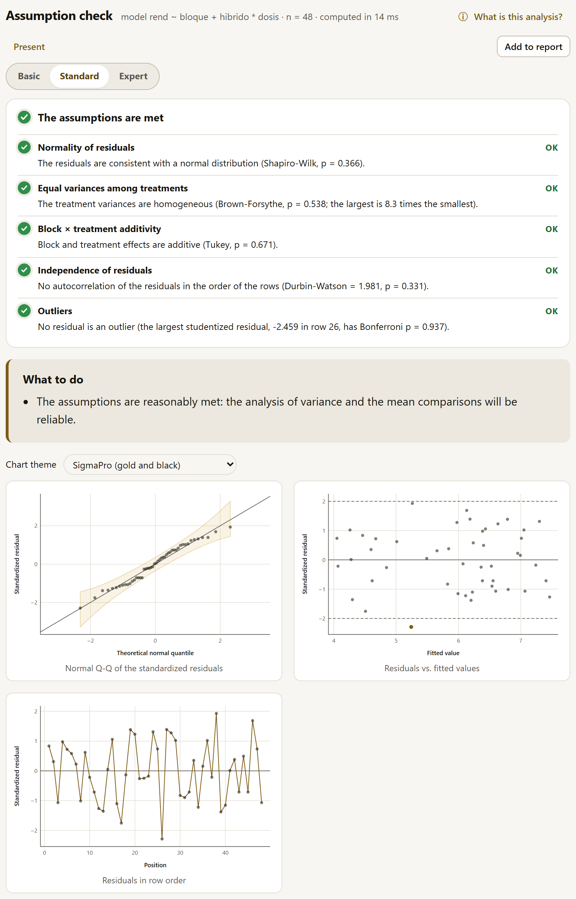
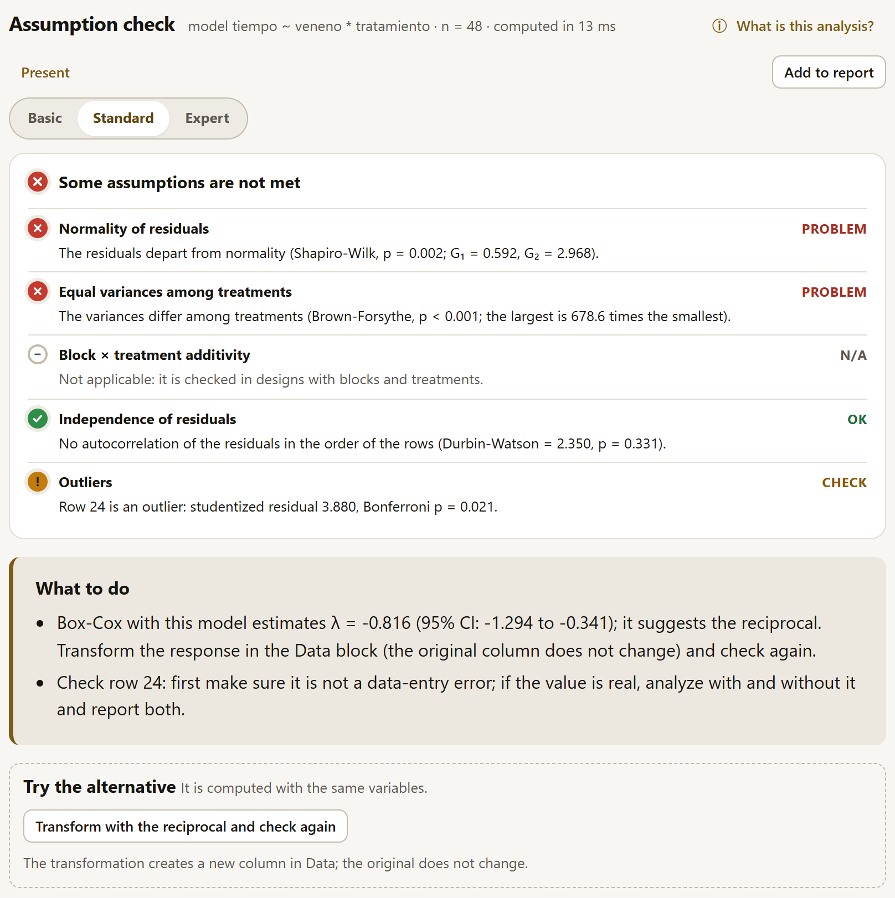
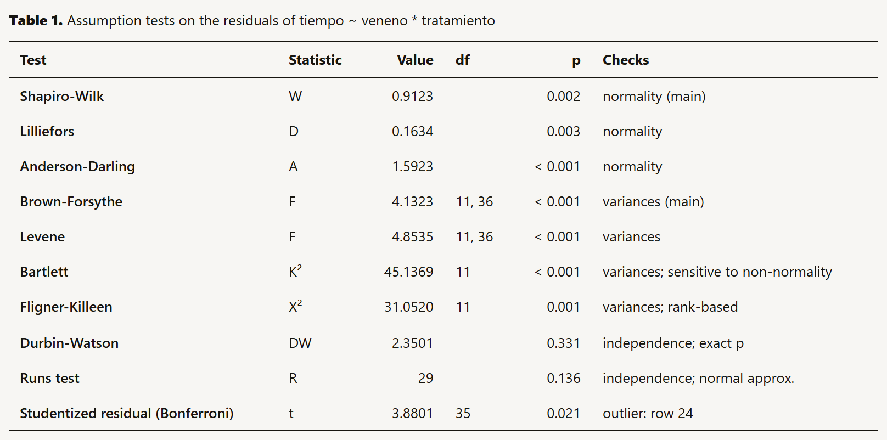
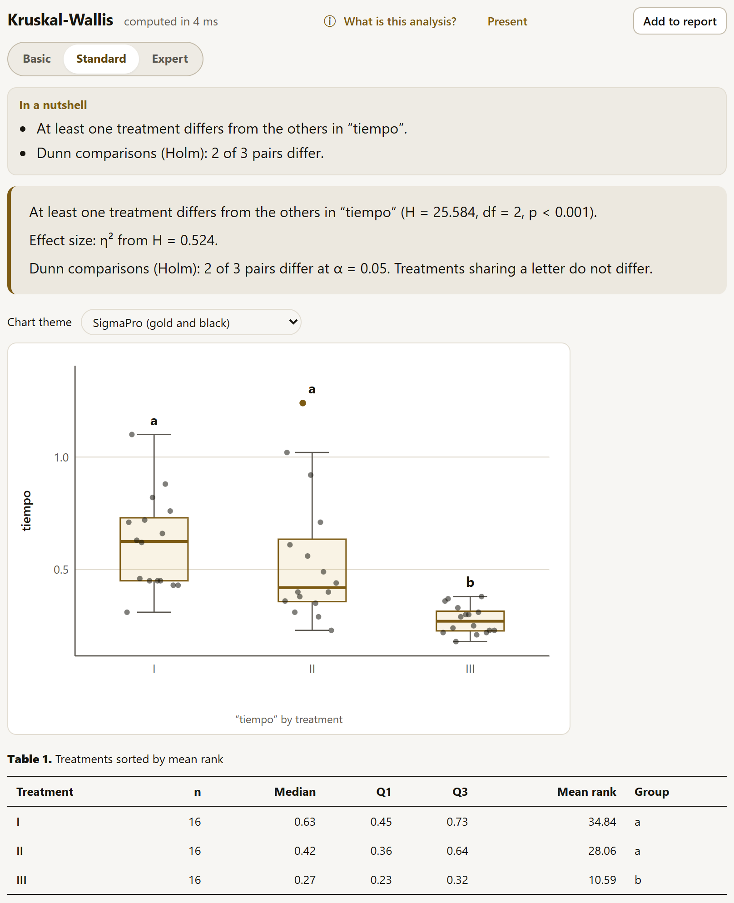

4.7Model assumptions
Analysis of variance, mean comparisons and regression rest on assumptions about the residuals (what the model does not explain): that they follow a normal distribution, that they have the same variance in all treatments, that they are independent of each other and that none of them is extreme. Check the model assumptions, the first method in the catalog, tests them all at once and tells you what to do if any of them fails.
| Option | What it decides |
|---|---|
| Response variable | The response of the model. |
| Treatments (up to 3, crossed) | The factors; the variances are compared among their combinations. |
| Blocks | The block, if there is one (— no blocks — if not). With blocks, block × treatment additivity is also checked. |
| Order for the independence check | The order in which similar neighboring residuals are looked for: — row order — or the order of a numeric or date column (the position in the field, the measurement date). |
| Significance level | The α of the tests (0.05, 0.01 or 0.10), which also sets the cutoffs of the traffic-light colors. |
The check fits the model respuesta ~ bloque + A * B * C with your choices; the header of the result writes it out, with the number of residuals (n), and a line warns how many rows with a missing value are left out.

The check accepts treatments and a single blocking factor: it properly checks completely randomized designs, block designs and their factorials. In a Latin square (put one of the two directions in Blocks), a lattice or a split plot the check is approximate, because it does not separate the other blocking factors or the main-plot error; it does not accept covariates either. When you add a completely randomized or randomized complete block design to the report (chapter 5), the report adds the traffic light of this check on its own, with the same model. The fact sheet of each analysis in Fundamentals (chapter 9) says, assumption by assumption, how to check it here and which alternative to use if it fails.
The traffic light
At the top of the result there is one row per assumption, each with its color, its icon (✓ OK, ! check, ✕ problem, – N/A), its status and a sentence with the test that decides it. The icon and the word say the same as the color, so you do not need to tell the colors apart. The overall color is that of the worst row: The assumptions are met, Some assumptions need checking or Some assumptions are not met.
| Assumption | Deciding test | Also computed |
|---|---|---|
| Normality of residuals | Shapiro-Wilk (from 3 to 5,000 residuals; with more, Anderson-Darling) | Lilliefors, Anderson-Darling; the skewness G₁ and the kurtosis G₂ |
| Equal variances among treatments | Brown-Forsythe (Levene with the median) | Levene, Bartlett (sensitive to non-normality), Fligner-Killeen (rank-based); the ratio of the largest variance to the smallest |
| Block × treatment additivity | Tukey’s non-additivity (with blocks) | — |
| Independence of residuals | Durbin-Watson, against positive autocorrelation; exact p with fewer than 100 residuals | Runs above and below the median (exact p with fewer than 30 residuals) |
| Outliers | The largest studentized residual, with a Bonferroni p | — |
The colors follow the p-value of the main test and the chosen α: green if p ≥ α (OK), amber if it falls between α/5 and α (CHECK) and red if p < α/5 (PROBLEM). With α = 0.05, the cutoffs are 0.05 and 0.01. A gray row says N/A (additivity without blocks; variances without treatments or with a treatment that has a single observation) or that there are too few observations for the test.
Normality has one exception: with 50 residuals or more and a nearly normal shape (|G₁| < 0.5 and |G₂| < 1), the row goes no further than amber even if the test rejects, and its sentence says that the departure is small. With so many data any departure turns out significant, and analysis of variance tolerates it.
What to do
Below the traffic light, the What to do box turns the result into concrete actions. Each recommendation appears only when its condition holds:
| When | What it proposes |
|---|---|
| Everything green | That the analysis of variance and the mean comparisons will be reliable. |
| Normality or variances fail and the response is positive | The Box-Cox transformation estimated with the same model (λ with its 95% interval) and the simple transformation that corresponds to it (square root, logarithm, reciprocal square root, reciprocal…), to be done in the Data block (section 2.9) before checking again. |
| Normality or variances fail and the response is counts (non-negative integers) | √(x + 0.5), or a Poisson or negative binomial model (section 4.17). |
| Normality or variances fail and the response is a percentage (the column name says so and the values range from 0 to 100) | The arcsine square root, or a binomial model with the total of each row (section 4.17). |
| Unequal variances with a single factor and no blocks | Compare the means with Games-Howell (section 4.11) or use Kruskal-Wallis (section 4.9): neither assumes equal variances. |
| Unequal variances with several factors or blocks, with no Box-Cox possible | Transform the response; a model with a different variance for each treatment is not yet in SigmaPro. |
| Only normality fails | With 30 residuals or more, that analysis of variance is robust to that lack of normality; with fewer, compare with Kruskal-Wallis or, with blocks, Friedman (section 4.9). |
| Additivity fails | The logarithm (it makes a multiplicative effect additive) or, with replicates within each block, including the interaction in the model. |
| Independence fails | Check the order of the rows; smaller blocks (spatial analysis is not yet in SigmaPro). |
| There is an outlier | Check that row: first, that it is not a data-entry error; if the value is real, analyze with and without it and report it. |
With Box and Cox’s poisons, for example, normality and variances fail and there is an outlying residual (figure 4.19): the app estimates the Box-Cox transformation with that same model (λ = −0.816, interval from −1.294 to −0.341), suggests the reciprocal and reminds you that the original column does not change; for row 24, it proposes checking first that it is not a data-entry error. If you check the poison alone, without the treatment, the model becomes one-way and the variances come out amber (Brown-Forsythe, p = 0.021): the box then adds Games-Howell and Kruskal-Wallis.
Trying the alternative
When a row of the traffic light fails, the Try the alternative box appears below it (in this check, below What to do), with one button per remedy. Each button runs the analysis that addresses the assumption, with the same variables; the numbers of the previous result do not change, and you go back to it by choosing it in the catalog. The buttons depend on the analysis:
| Analysis | When | What the button runs |
|---|---|---|
| Assumption check | Normality or variances fail and Box-Cox proposes a transformation | Creates the transformed column in Data (ln_, raiz_, inv_ or bc_ plus the name of the response) and checks again with it. |
| … and the response is counts | The count models, with the family chosen according to the overdispersion (section 4.17). | |
| With a single factor: unequal variances, or normality with fewer than 30 residuals | Kruskal-Wallis, or Friedman if there are blocks (section 4.9); with unequal variances and no blocks, also Games-Howell (section 4.11). | |
| t test | Unequal variances with Student’s t | Welch’s t. |
| Normality fails | Wilcoxon: Mann-Whitney with two groups, signed-rank with one sample or paired data (section 4.9). | |
| Linear and polynomial regression | Normality or constant variance fails | With a positive response, its logarithm in a new column and the fit again; with counts, the count model with the predictors as covariates (up to two). |
| The shape fails, with one predictor | Polynomial regression of degree 2. | |
| Collinearity, with three or more predictors | Best subsets (section 4.12). | |
| Generalized models | Overdispersion with the Poisson or the binomial | The negative binomial or the quasibinomial. |
| Mixed models and repeated measures | Normality or variances fail and the response is positive | Its logarithm in a new column and the fit again. |
The transformed column is created only once: if it already exists with the same transformation, that one is used. A notice gives its name, and the original column does not change (section 2.9). With the poisons, Transform with the reciprocal and check again creates inv_tiempo, and the check with it comes out with all rows green, except additivity, which does not apply without blocks. Outliers, additivity and independence have no button: they call for checking the data or the design.

The charts and the table
- Normal Q-Q of the standardized residuals: if the residuals are normal, the points follow the diagonal. The shaded band is the confidence region; points that fall outside it are marked and the farthest ones carry their row number.
- Residuals vs. fitted values: you should see a shapeless cloud. A funnel (more scatter at larger values) reveals unequal variances; the lines at ±2 flag the large residuals.
- Residuals in the order of the rows or of the chosen column: long runs of the same sign reveal dependence (similar neighboring plots).
Above the three charts is the Chart theme selector, the same as in the other results (table 6.1). This result does not carry the LABG Suite band at the bottom: no app in the suite continues the assumption check.
Table 1 lists all the tests, each with its statistic, value, degrees of freedom, p and what it checks; the main test of each assumption is marked “(main)”, and the note recalls the traffic-light cutoffs. Residual variance by treatment (collapsed) holds the variance of each combination, so you can see which one stands apart.

Bartlett’s test is very sensitive to non-normality: with heavy-tailed residuals it rejects equality of variances even when the variances are equal. The Brown-Forsythe test (Levene’s test with the median instead of the mean) is robust to this, which is why it decides the row; Bartlett stays in the table as a reference. For a similar reason, with very large data sets you should look at the charts as well as the p-values: with thousands of residuals, tiny departures from normality already turn out significant (hence the normality exception with 50 residuals or more).
4.8t tests
The t test compares means in three situations, chosen in Comparison type:
| Type | What it asks for | Example |
|---|---|---|
| Two independent groups | The Response variable, the Group column and, if that column has more than two levels, the ones compared in Group 1 and Group 2. | Survival time with treatments A and B. |
| Paired measurements | The First measurement and the Second measurement, two columns measured on the same units (each row, one unit); first − second is compared. | Height of the same plant at 15 and at 30 days. |
| One sample vs. a value | The Variable and the Reference value (μ₀). | Does mean germination differ from 50%? |
The other options: the Difference under H₀ (for two groups and paired data; usually 0), the Alternative hypothesis (Two-sided (≠), Less (<) or Greater (>)), the Confidence level of the interval (95, 99 or 90%), the Significance level and, with two groups, the Assume equal variances (Student's t) checkbox. Left unchecked, Welch’s t is used, which does not assume equal variances and is the recommended one: with equal variances it gives almost the same as Student’s, and with unequal variances it remains valid.
![Welch’s t test with the poisons, treatments A and B: the form with comparison type, response variable tiempo, group column, groups A and B, difference under H0, two-sided hypothesis, 95% confidence and the equal-variances checkbox unchecked; the result: the mean of A (0.314) differs from that of B (0.677), difference −0.362, t = −3.729, df = 13.21, p = 0.002; large effect size, Hedges’ g −1.470; the traffic light for normality and variances; the chart theme selector and the box plot of the two groups with their points and their mean](../img/en/b4-t.png)
The result includes:
- the conclusion with the two means, the difference and its interval, and t, df and p;
- the effect size in words, based on Hedges’ g and Cohen’s guide: very small (below 0.2), small (from 0.2), medium (from 0.5) or large (from 0.8). For paired data it is computed on the differences (dz) and for one sample, against the reference value;
- the traffic light: the normality of each group (or of the differences, for paired data) by Shapiro-Wilk and, with two groups, the comparison of the variances with the F test. With Welch’s t, that row (Variances (Welch's t)) stays green even if the variances differ, because Welch does not assume them equal; with Student’s (Equal variances) it is colored according to the F and, if they differ, Try the alternative runs Welch’s (if normality fails, Wilcoxon);
- the chart of the values of each group (for paired data, of the differences), with the quartile box and the mean; for paired data and one sample, a dashed line marks the reference value;
- the tables: the chosen test (with two groups, the other t below as a reference), the means and standard deviations, and the effect size: Cohen’s d and Hedges’ g (d corrected for small-sample bias), with intervals based on the noncentral t (Steiger and Fouladi, 1997).
With treatments A and B of the poisons, the variances differ greatly (F = 0.102, p < 0.001). With Welch, the test uses 13.21 df (p = 0.002) and the variances row says that it remains valid; if you check the Student box, the test uses 22 df (p = 0.001) and the same row comes out red with “Welch's t, which does not assume them equal, is preferable”.
With three or more treatments, comparing them two at a time with t tests inflates the probability of finding differences that do not exist. The way to go is the analysis of variance of the design (section 4.10) followed by a mean comparison that controls that error (section 4.11).
4.9Nonparametric tests
When the data do not meet normality and a transformation does not achieve it, or when the response is an ordered scale (damage from 1 to 5, a score), rank tests compare groups without assuming a distribution. They sort all the values and work with their position. SigmaPro computes their exact distributions when the size allows it, as R does. None of the three has a traffic light.
| Test | Equivalent to | When |
|---|---|---|
| Wilcoxon and Mann-Whitney | The t test | Two independent groups (rank sum, Mann-Whitney), two paired measurements or one sample against a value (signed ranks). |
| Kruskal-Wallis | The completely randomized ANOVA | Three or more treatments without blocks. |
| Friedman | The block ANOVA | Three or more treatments with one value of each in each block (plot, judge, date). |
Wilcoxon and Mann-Whitney
The form is that of the t test (without the variances checkbox), with two more options: p-value (Exact if possible, Exact or Normal approximation) and Continuity correction, checked by default, for the normal approximation. With Exact if possible, the exact p is used with fewer than 50 values per group and no ties (nor differences equal to the reference value, in the signed ranks), as in R; with ties the app uses the normal approximation even if the exact one is requested, and the table note says which was used.
The result gives the statistic (W for two groups, V for paired data and one sample), the p and, as the effect measure, the Hodges-Lehmann estimator of the shift between the groups (the median of all the differences between one value from each group; for paired data and one sample, the pseudomedian) with its interval, plus a table of medians and quartiles and a box plot. If, with so few data, the interval cannot reach the requested confidence, a note says which one it reaches. With treatments A and B of the poisons, which have ties: W = 20.5, p = 0.003, and a shift of −0.360 (95% CI: −0.610 to −0.090), with the normal approximation corrected for continuity and for ties.
Kruskal-Wallis

You choose the Response variable, the Treatments, the Pairwise comparisons method (Dunn, Conover-Iman or Nemenyi) and the p-value adjustment for multiple comparisons: Holm (the default), Bonferroni, Benjamini-Hochberg (FDR) or No adjustment; with Conover-Iman, also Tukey (single-step). Nemenyi needs no adjustment: its p already comes from the studentized range. The result gives H with its degrees of freedom and its p (corrected for ties), the effect size η² from H, and the comparisons: the Treatments sorted by mean rank table, with the median, the quartiles and their letters (treatments that share a letter do not differ), which also appear on the chart, and the table for each pair, with the difference in mean ranks, the statistic, the unadjusted p and the adjusted one.
Friedman
It also asks for the Blocks column, with one value per treatment in each block. The pairwise comparisons can be Conover, Nemenyi or paired Wilcoxon, with the same adjustments; Tukey (single-step) only with Conover. Besides χ² and its p, it gives Kendall’s W, the agreement among blocks (from 0, none, to 1, all blocks rank the treatments the same way), and the table of treatments sorted by their rank sum, with their letters.
The data must form a complete table of blocks by treatments:
- A block with an empty response in some treatment is left out, as in R, and a note says how many. With the avocado thrips, two of the six blocks have a plot with no value: the test uses the other four (χ² = 8.308, df = 4, p = 0.081; W = 0.519) and the chart shows only those blocks.
- If the row of some block and treatment combination is missing, the app stops: “Friedman needs the same treatments in all blocks, and some combinations are missing”.
- If a treatment has more than one value in a block (replicates, or a factorial in blocks), it also stops, and proposes averaging the replicates of each treatment in each block in the spreadsheet, importing that table of means and trying again. That is what happens with the maize if you ask for the hybrids in blocks: each block has four plots of each hybrid, one per rate.
Rank tests say whether one group tends to have higher values than another, not how much their means differ, and with normal data they have somewhat less power than ANOVA. Before turning to them, it is worth trying the transformation suggested by the assumption check (section 4.7), or a generalized linear model if the response is a count or a proportion (section 4.17).